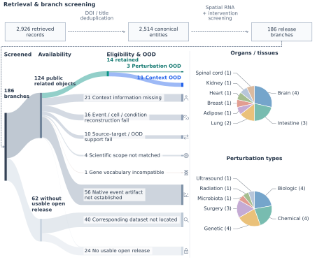
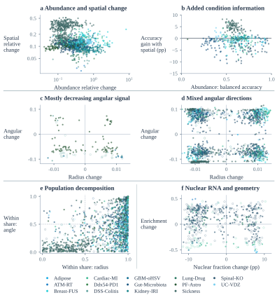

01PF-Astro
BrainBrain-derived astrocyte culture; single-guide CRISPRi.
- RNA
- 10,670,839
- Cells
- 11,454
- Genes
- 485
1 The Chinese University of Hong Kong 2 Duke University 3 Zhejiang University 4 Shanghai Innovation Institute
jinghao.w@link.cuhk.edu.hk * Correspondence: gchb4science@gmail.com
SubcellPert benchmarks perturbation-response prediction across 14 imaging datasets and eight baselines, extending virtual cell evaluation from gene counts to intracellular RNA organization.
Standard perturbation models predict one number per gene. Imaging-based spatial transcriptomics records something richer: the identity and intracellular coordinate of every detected RNA molecule.
The target is an unpaired RNA population after an intervention or in a held-out cellular context.
One dot = one RNA molecule. Color marks gene identity; perturbation changes abundance and intracellular organization.
Illustrative schematic · not evaluated model outputThree datasets evaluate perturbation OOD; eleven evaluate cellular-context OOD. Each dataset retains its own gene panel and grouping metadata.

Corpus prepared 24 Sep 2026: ≥50 cells per context–condition group. Dataset release: Dataset snapshot ↗.
Unseen intervention identities and registered combination stress tests.
Brain-derived astrocyte culture; single-guide CRISPRi.
Diffuse midline glioma; ATM loss and focal radiotherapy.
Lung-tumor model; Ddx54 knockdown and anti-PD-1 antibody.
Known responses evaluated in held-out cellular contexts.
Formal drug family only: AZD3965 and VB124 added after bleomycin.
Hypothalamus; DSS chemical challenge and LPS/poly(I:C)/PLA2/STAg immune stimuli.
Colon; DSS-induced colitis and recovery.
Subcutaneous adipose before and after bariatric-surgery-associated weight loss.
Colon; vedolizumab antibody treatment.
Kidney; surgical ischemia-reperfusion injury.
Small-intestine and colon regions; SPF to germ-free condition.
Heart; myocardial infarction induced by surgical coronary ligation.
Breast cancer; focused ultrasound with or without gemcitabine.
Glioblastoma; oncolytic HSV treatment-associated recurrence.
Spinal cord; four developmental knockout responses.
Spatial W1 ↓ measures RNA localization error with exact target counts supplied.
MSE ↓ and PCC-delta ↑ measure abundance. Spatial W1 ↓ measures localization on recovered genes, alongside gene coverage ↑.
Eight baselines · 38 frozen split instances · 304 Oracle + 304 Joint runs. Foundation-model encoders are frozen; adapters train for five epochs.
Observed RNA responses reveal how abundance, spatial organization, and population composition vary within each dataset.

Response magnitudes vary on matched genes. Separate gene-level correlations are +0.264 in Adipose adipocytes, +0.086 in GBM tumor cells, and −0.139 in GBM macrophages/monocytes: weak associations with different signs.
Median condition-decoding gains are +4.85 pp in Sickness (101/102 contexts improve), +0.67 pp in GBM-oHSV (7/8), and −3.01 pp in Spinal-KO.
1,622 comparisons across 12 datasets show dataset-specific radial and angular patterns. DSS-Colitis has low angular observability, limiting interpretation of its apparent direction.
In Breast-FUS, within-cluster terms dominate radius changes in 66/68 comparisons; composition terms dominate angle in 51/68. These spatial clusters do not establish biological states.
Four Adipose contexts have higher nuclear RNA fractions but lower enrichment after normalization by projected nuclear area. Fraction and area-normalized enrichment describe different aspects of the response.
Adding spatial principal components (PCs) to abundance features; identical three stratified cell splits, λ = 1. Gains are medians of context-level mean balanced-accuracy differences, in percentage points (pp).
Download CSV ↓| Dataset | Contexts | Mean gain > 064 PCs | All splits > 064 PCs | Gain: 64 PCspp | Gain: 32 PCspp |
|---|---|---|---|---|---|
| Adipose | 6 | 0 | 0 | -1.672 | -1.540 |
| ATM-RT | 1 | 0 | 0 | -0.115 | -0.123 |
| Breast-FUS | 46 | 19 | 8 | -0.901 | +0.033 |
| Cardiac-MI | 50 | 18 | 7 | -0.664 | -0.283 |
| Ddx54-PD1 | 1 | 0 | 0 | -0.120 | -0.174 |
| DSS-Colitis | 8 | 0 | 0 | -0.091 | -0.027 |
| GBM-oHSV | 8 | 7 | 5 | +0.666 | +0.591 |
| Gut-Microbiota | 66 | 5 | 2 | -1.240 | -0.589 |
| Kidney-IRI | 20 | 13 | 6 | +0.036 | +0.107 |
| Lung-Drug | 11 | 2 | 2 | -0.105 | -0.050 |
| PF-Astro | 1 | 0 | 0 | -0.371 | -0.261 |
| Sickness | 102 | 101 | 99 | +4.851 | +5.581 |
| Spinal-KO | 83 | 9 | 1 | -3.006 | -1.859 |
| UC-VDZ | 23 | 14 | 6 | +0.357 | +0.401 |
Positive counts are descriptive, with differences within 10⁻¹² balanced-accuracy units treated as ties. This analysis classifies observed conditions from held-out cells; it does not test prediction for unseen donors or perturbations.
608 runs across 14 datasets and eight baselines. Compare all-gene and top-100 DEG scores.
PF-Astro · Perturbation OOD · All genes · 3 data splits
| Baseline | Oracle W1 ↓ | Joint W1 ↓Recovered genes | Coverage ↑ | Joint MSE ↓ | PCC-delta ↑ |
|---|---|---|---|---|---|
| Resampling | 0.251 ± 0.0081 | 0.254 ± 0.0082 | 99.79% ± 0.042 pp | 0.00646 ± 0.00025 | -0.00043 ± 0.032 |
| Gaussian | 0.253 ± 0.0069 | 0.257 ± 0.0063 | 99.79% ± 0.042 pp | 0.00834 ± 0.00054 | 0.033 ± 0.021 |
| Radial | 0.298 ± 0.0025 | 0.267 ± 0.0069 | 99.79% ± 0.042 pp | 0.00834 ± 0.00054 | 0.033 ± 0.021 |
| scGPT-spatial | 0.249 ± 0.0084 | 0.263 ± 0.012 | 99.61% ± 0.29 pp | 0.0109 ± 0.004 | 0.0347 ± 0.0059 |
| SpatialFormer | 0.249 ± 0.0063 | 0.263 ± 0.0063 | 99.43% ± 0.17 pp | 0.0109 ± 0.0015 | 0.0385 ± 0.016 |
| scGPT | 0.249 ± 0.0063 | 0.267 ± 0.013 | 99.42% ± 0.26 pp | 0.0133 ± 0.0032 | 0.0482 ± 0.022 |
| scFoundation | 0.249 ± 0.0063 | 0.254 ± 0.0082 | 99.79% ± 0.042 pp | 0.00646 ± 0.00025 | -0.00043 ± 0.032 |
| STATE-SE | 0.248 ± 0.0066 | 0.256 ± 0.01 | 99.67% ± 0.2 pp | 0.00778 ± 0.0022 | -0.00753 ± 0.02 |